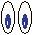

Ejemplo de uso de enlaces
pínchame
Ejemplo de uso de imagenes

Ejemplo de uso de abreviaturas
El ASIR
comenzó a impartirse en Septiembre de 2010.
Ejemplo de uso de acrónimos
El protocolo web más usado es el HTTP
Ejemplo de uso de citas
La frase No hay nada repartido de modo más equitativo que la razón: todo el mundo
está convencido de tener suficiente.
fué dicha por René Descartes (1596-1650)
Filósofo y matemático francés.
Ejemplo de uso de imágenes como enlaces
Pulsa en la imagen